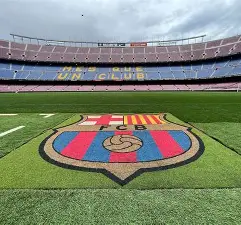

Our Services

- Match Updates
- Transfer News
- Highlights
What we provide?
Daily Barça News
Stay informed about everything happening at FC Barcelona, from official club announcements to important developments surrounding the team.
Features
- Daily club news and announcements
- Updates about the first team
- Important events and developments
- News about the club's activities
Match Updates
Keep up with FC Barcelona matches and follow the team's performance throughout every competition. More
Features
- Live score updates
- Match results and fixtures
- Goal scorers and key moments
- Match summaries and recaps
Player News and Updates
Discover the latest news about Barça players, their performances, and their contributions to the team.
Features
- Player performance updates
- Injury and recovery news
- Player profiles and biographies
- Individual achievements and milestones
Transfer News
Follow the latest transfer developments involving FC Barcelona and stay informed about potential signings and departures.
Features
- Official signing announcements
- Player departures and loan deals
- Transfer window updates
Match Highlights and Videos
Relive the most exciting moments from Barça matches through highlights and video content.
Features
- Goal highlights
- Match-winning moments
- Post-match interviews
- Memorable goals and performances
Barça Statistics and Analysis
Explore team and player statistics to better understand Barcelona's performance across different competitions.
Features
- Match statistics and possession
- Goals, assists, and clean sheets